|
Bryan Russell
Research Scientist Adobe Research Address: 601 Townsend Street San Francisco, CA 94103 Phone: +1 415 832 2705 E-mail: brussell at adobe.com |
Internship advice: I'm happy to collaborate with enthusiastic and talented PhD, master's, and advanced undergraduate students in computer science. I typically hire interns to work with me in San Francisco during the summer, but may have availability at other times throughout the year. For summer internships I review applications between November and February. Intern slots are limited and competitive. To apply, simply e-mail me your CV, 1-2 references, and a brief description of what you would like to work on during your internship.
Research: My research is primarily in computer vision. I'm interested in the following areas:
- Learning from video: What is a good representation for actions and events in video? How can we best jointly model natural language and video? How can we scale up training for video datasets from small (~10K) to large (~10M)? Potential applications incude large-scale search and retrieval for video, and enhanced video editing.
- 3D scene understanding: How can we recover a detailed 3D semantic representation of a depicted scene from one or more images? How can we bridge the appearance gap between real and computer-generated rendered images? What is a good representation for mid-level vision? Potential applications include augmented reality, 2D-3D compositing and editing, and robotics.
Bio: I received my Ph.D. from MIT in the Computer Science and Artificial Intelligence Laboratory under the supervision of Professors Bill Freeman and Antonio Torralba. I was a post-doctoral fellow in the INRIA Willow team at the Département d'Informatique of Ecole Normale Supérieure. Prior to joining Adobe I was a Research Scientist with Intel Labs as part of the Intel Science and Technology Center for Visual Computing (ISTC-VC) and Affiliate Faculty at the University of Washington.
Professional activities:
- Area chair: CVPR 2016, 3DV 2016.
Commercial highlights
- Automatic portrait segmentatation in Photoshop Mix mobile app's "auto cut out" feature (with Francisco Massa, Ian Sachs, and Shoaib Kamil). Selfie demo video that includes our feature, along with other selfie features.
Publications
Selected projects
| 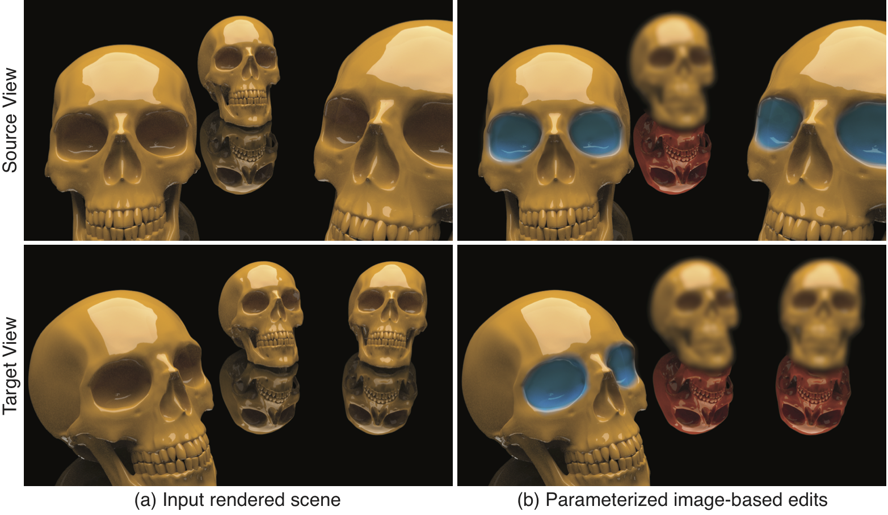 |
Transferring Image-Based Edits for Multi-Channel Compositing
James W. Hennessey, Wilmot Li, Bryan Russell, Eli Shechtman, Niloy J. Mitra ACM Transactions on Graphics (SIGGRAPH Asia), 2017. |
| 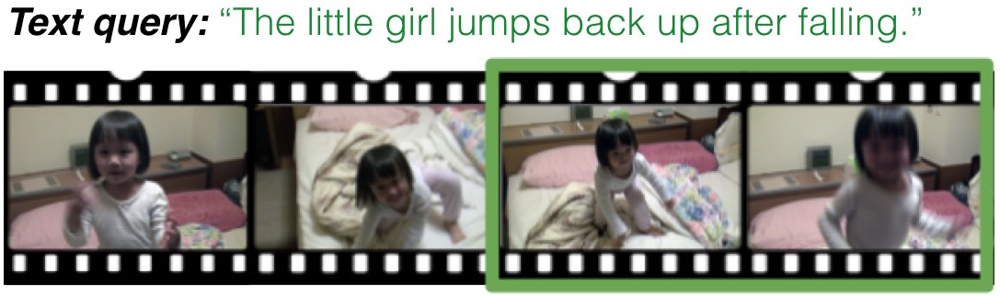 |
Localizing Moments in Video with Natural Language
Lisa Anne Hendricks, Oliver Wang, Eli Shechtman, Josef Sivic, Trevor Darrell, Bryan Russell International Conference on Computer Vision (ICCV), 2017. |
| 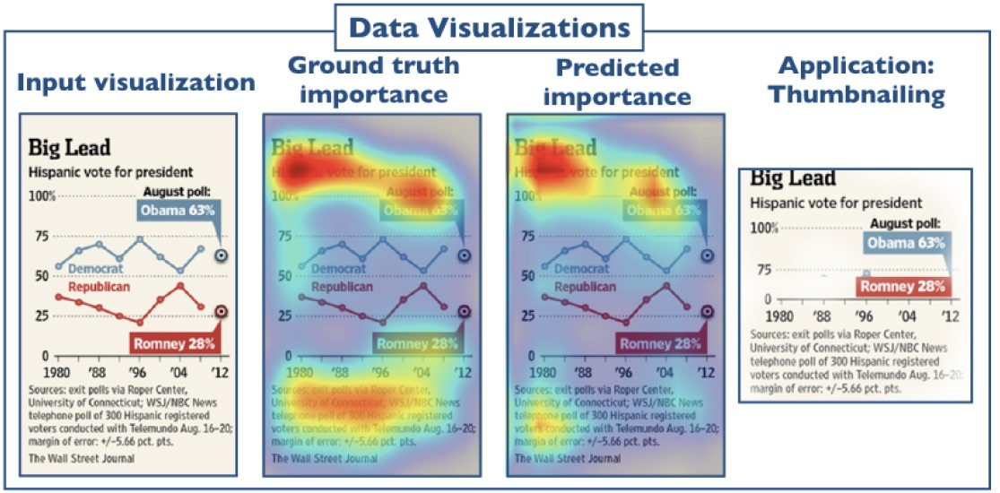 |
Learning Visual Importance for Graphic Designs and Data Visualizations
Zoya Bylinskii, Nam Wook Kim, Peter O'Donovan, Sami Alsheikh, Spandan Madan, Hanspeter Pfister, Fredo Durand, Bryan Russell, Aaron Hertzmann UIST, 2017. |
| 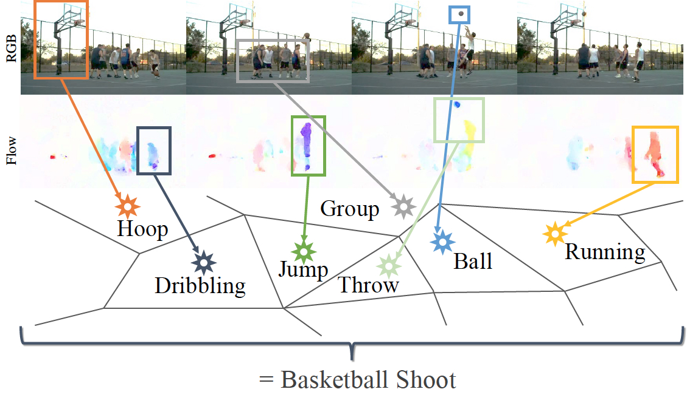 |
ActionVLAD: Learning Spatio-temporal Aggregation for Action Classification
Rohit Girdhar, Deva Ramanan, Abhinav Gupta, Josef Sivic, Bryan Russell Conference on Computer Vision and Pattern Recognition (CVPR), 2017. |
| 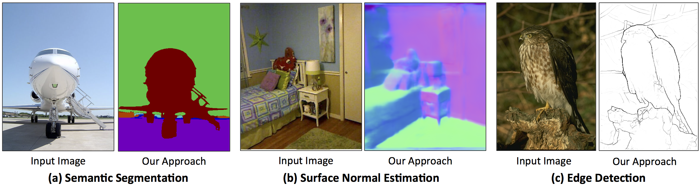 |
PixelNet: Representation of the Pixels, by the Pixels, and for the Pixels
Aayush Bansal, Xinlei Chen, Bryan Russell, Abhinav Gupta, Deva Ramanan arXiv, 2017. |
| 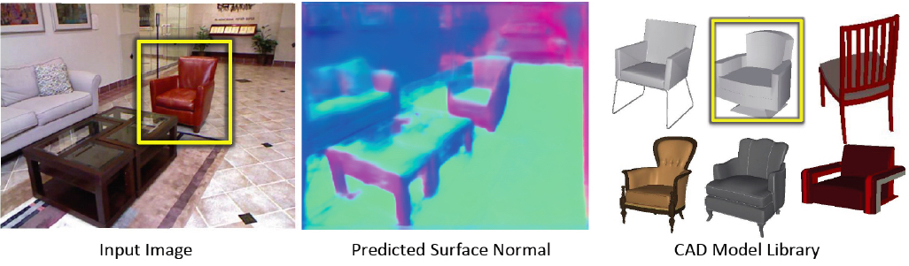 |
Marr Revisited: 2D-3D Alignment via Surface Normal Prediction
Aayush Bansal, Bryan C. Russell, Abhinav Gupta Conference on Computer Vision and Pattern Recognition (CVPR), 2016. |
| 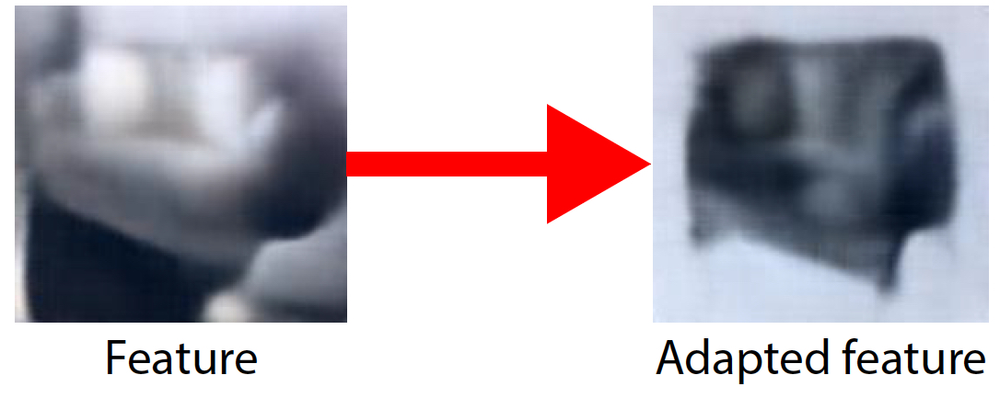 |
Deep Exemplar 2D-3D Detection by Adapting from Real to Rendered Views
Francisco Massa, Bryan C. Russell, Mathieu Aubry Conference on Computer Vision and Pattern Recognition (CVPR), 2016. |
| 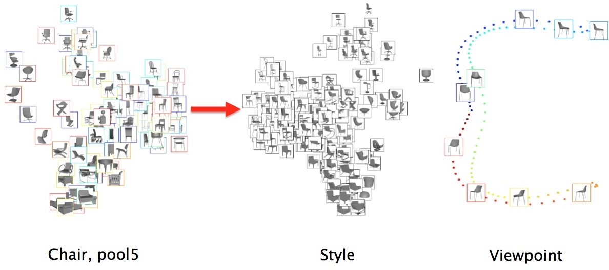 |
Understanding Deep Features with Computer-Generated Imagery
Mathieu Aubry and Bryan C. Russell IEEE International Conference on Computer Vision (ICCV), 2015. |
| 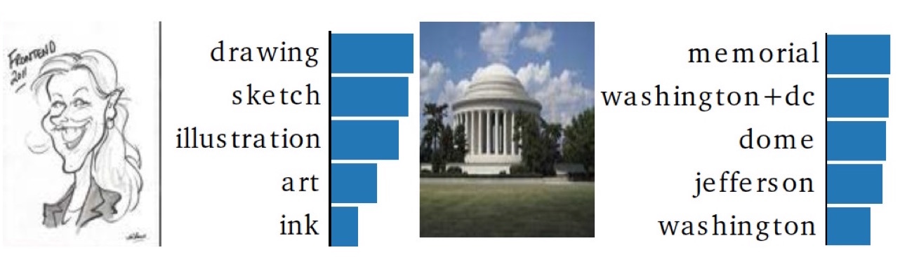 |
Deep Classifiers from Image Tags in the Wild
Hamid Izadinia, Bryan C. Russell, Ali Farhadi, Matthew D. Hoffman, Aaron Hertzmann Multimedia COMMONS, ACM Multimedia, 2015. |
| 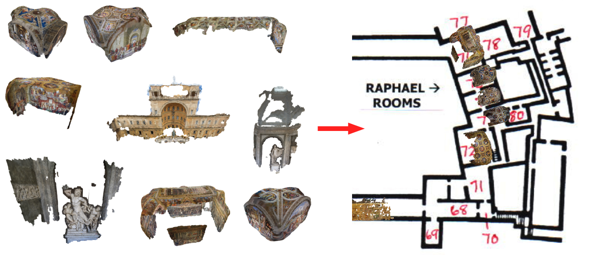 |
The 3D Jigsaw Puzzle: Mapping Large Indoor Spaces
Ricardo Martin-Brualla, Yanling He, Bryan C. Russell, Steven M. Seitz European Conference on Computer Vision (ECCV), 2014. |
| 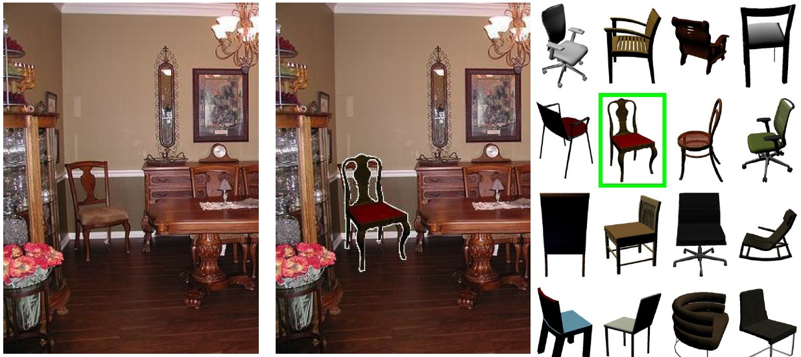 |
Seeing 3D Chairs: Exemplar Part-based 2D-3D Alignment Using a Large Dataset of CAD Models
Mathieu Aubry, Daniel Maturana, Alexei A. Efros, Bryan C. Russell, and Josef Sivic IEEE Conference on Computer Vision and Pattern Recognition (CVPR), 2014. |
| 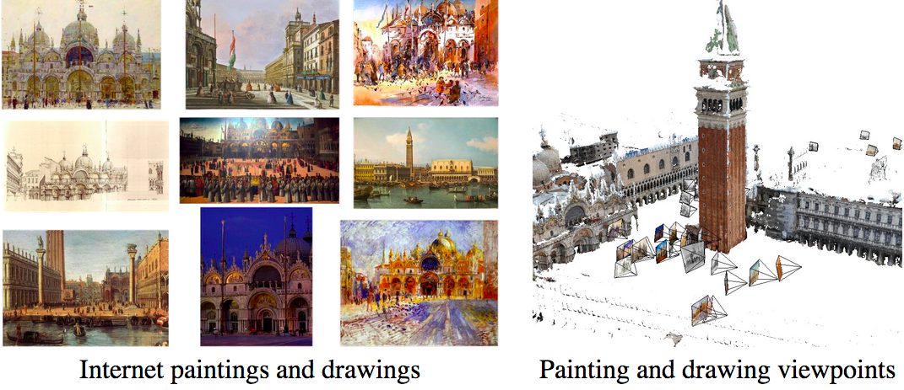 |
Painting-to-3D Model Alignment Via Discriminative Visual Elements
Mathieu Aubry, Bryan C. Russell, and Josef Sivic ACM Transactions on Graphics (presented at SIGGRAPH 2014), Vol. 33, No. 2, 2014. |
| 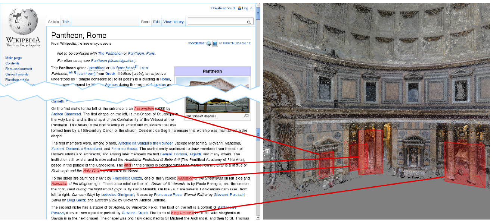 |
3D Wikipedia: Using Online Text to Automatically Label and Navigate Reconstructed Geometry
Bryan C. Russell, Ricardo Martin-Brualla, Daniel J. Butler, Steven M. Seitz, and Luke Zettlemoyer ACM Transactions on Graphics (SIGGRAPH Asia), Vol. 32, No. 6, 2013. |
| 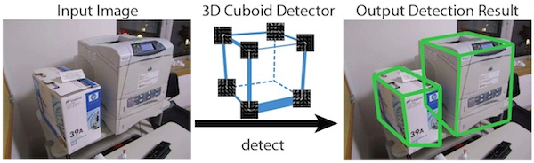 |
Localizing 3D Cuboids in Single-view Images
Jianxiong Xiao, Bryan C. Russell, and Antonio Torralba Advances in Neural Information Processing Systems (NIPS), 2012. |
 |
Automatic Alignment of Paintings and Photographs Depicting a 3D Scene
Bryan C. Russell, Josef Sivic, Jean Ponce, and Hélène Dessales 3rd International IEEE Workshop on 3D Representation for Recognition (3dRR-11), associated with ICCV 2011. |
 |
Segmenting Scenes by Matching Image Composites
Bryan C. Russell, Alexei A. Efros, Josef Sivic, William T. Freeman, and Andrew Zisserman Advances in Neural Information Processing Systems (NIPS), 2009. |
| 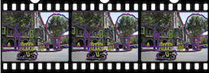 |
LabelMe video: Building a Video Database with Human Annotations
Jenny Yuen, Bryan C. Russell, Ce Liu, and Antonio Torralba IEEE International Conference on Computer Vision (ICCV), 2009. |
| 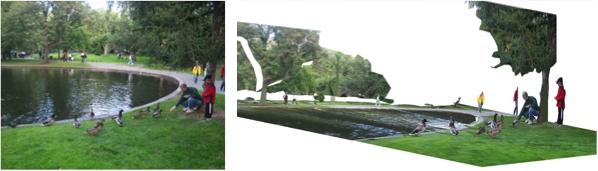 |
LabelMe3D: Building a Database of 3D Scenes from User Annotations
Bryan C. Russell and Antonio Torralba IEEE Conference on Computer Vision and Pattern Recognition (CVPR), 2009. |
 |
LabelMe: A Database and Web-based Tool for Image Annotation
Bryan C. Russell, Antonio Torralba, Kevin P. Murphy, and William T. Freeman International Journal of Computer Vision, 77(1-3):157-173, 2008. |
 |
Object Recognition by Scene Alignment
Bryan C. Russell, Antonio Torralba, Ce Liu, Rob Fergus, and William T. Freeman Advances in Neural Information Processing Systems (NIPS), 2007. |
 |
Using Multiple Segmentations to Discover Objects and their Extent in Image Collections
Bryan C. Russell, Alexei A. Efros, Josef Sivic, William T. Freeman, and Andrew Zisserman IEEE Conference on Computer Vision and Pattern Recognition (CVPR), 2006. |
 |
Discovering Objects and their Location in Images
Josef Sivic, Bryan C. Russell, Alexei A. Efros, Andrew Zisserman, and William T. Freeman International Conference on Computer Vision (ICCV), 2005. |
Misc.
- CVPR 2013: Intel sponsored panel discussion on computational bottlenecks in computer vision
- Spring 2012: CSE 590V: Computer vision seminar
- Fall 2011: CSE 590V: Computer vision seminar